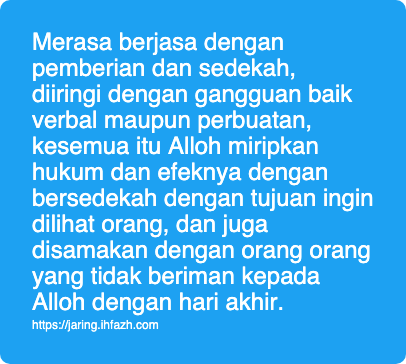

Merasa Sudah Banyak Beramal
Alloh larang Nabi-Nya untuk merasa sudah banyak beramal, merasa berjasa atas Alloh karena amalannya. Sebaliknya, Alloh perintahkan beliau untuk bersabar.
ولا تمنن تستكثر ولربك فاصبر
Wahai jiwa, amalanmu sekalipun tak akan membalas karunia yang Tuhanmu berikan. Apakah pantas kamu merasa si-paling dan merasa sudah banyak amalanmu?
Wahai jiwa, amalanmu sekalipun tidak akan menambah kekayaan Sang raja diraja. Lalu apa yang kau banggakan dihadapan-Nya?
Wahai jiwa, sedikitpun amalanmu, tidak akan mengurangi kekayaan Sang Maha Kaya. Lalu, kenapa kamu bakhil terhadap kewajibanmu sendiri?
Sang utusanpun Alloh ingatkan, tidakkah kamu lebih berhak untuk mendengarkan?
Orang orang lemah iman, dengan islamnya mereka, mereka sudah merasa paling berjasa
يمنون عليك أن أسلموا قل لا تمنوا علي إسلامكم بل الله يمن عليكم أن هداكم للإيمان إن كنتم صادقين
Mereka merasa berjasa karena mereka sudah berislam. Katakanlah: "Jangan kalian merasa berjasa kepada saya karena kalian masuk islam". Yang benar, Alloh lah yang memiliki jasa atas diri kalian karena Dia memberikan hidayah kepada kalian untuk beriman, kalau kalian benar benar jujur.
Merasa berjasa dengan pemberian dan sedekah, diiringi dengan gangguan baik verbal maupun perbuatan, kesemua itu Alloh miripkan hukum dan efeknya dengan bersedekah dengan tujuan ingin dilihat orang, dan juga disamakan dengan orang orang yang tidak beriman kepada Alloh dengan hari akhir.
Alloh nyatakan bahwa perbuatan itu merusak sedekah seorang mukmin.
يا أيها الذين آمنوا لا تبطلوا صدقاتكم بالمن و الأذى ... الآية